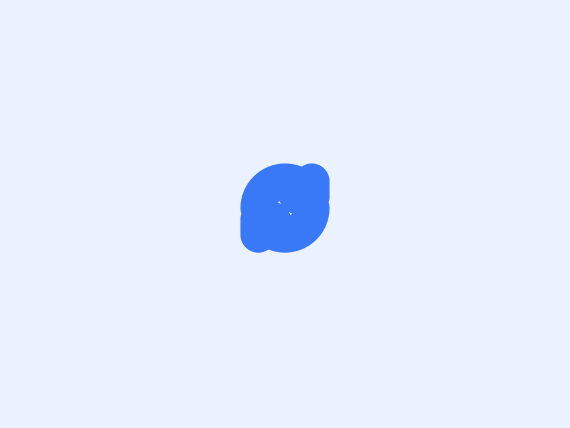

Stop refreshing when the page changes.
Tell it what to look for. It keeps reloading the page, and the moment your text appears, disappears, or the content changes, it stops and notifies you.

How page change monitor works
Tell it what to look for. It keeps reloading the page, and the moment your text appears, disappears, or the content changes, it stops and notifies you.
Only the visible text of the page in your own browser. Nothing is sent anywhere; the comparison happens locally. Text matching ignores upper and lower case.
Quick setup
Open the popup and go to Advanced settings, Watch the page.
Choose a mode, for example Stop when text appears.
Type the text, such as In stock.
Press Start and leave the tab open. You get a desktop notification and a flashing tab title on a match.
Website change detection, built into the refresh
Most people refresh a page because they are waiting for something. A page monitor does the waiting for you: after every reload it checks the page, and when your condition is met it stops and tells you.
Free Auto Refresh can track website changes in three ways, all free and all running locally in your browser.
Stop when text appears
Type a word or phrase such as In stock or Results published. Refreshing ends the first time it shows up.
Stop when text disappears
Watch for a message such as Sold out or No appointments available to go away.
Stop when content changes
Compare the page with how it looked on the first load. Add a CSS selector to watch one element only.
Get a website change alert you will actually notice
On a match you get a desktop notification, and the tab title flashes until you look at it. The toolbar icon shows an exclamation mark, and the on-page counter turns red and says a match was found.
Alerts stay on your computer. There is no email, text message or phone push, so the browser needs to be open.
Avoiding false alarms
- Watch one element. In Content changes mode, a selector such as #price or .stock-status ignores adverts, clocks and counters elsewhere on the page.
- Give slow pages time. It waits for the page to finish loading; raise Extra wait to 2 or 3 seconds if content arrives late.
- Use exact wording. Copy the phrase from the page. Matching ignores upper and lower case.
How it differs from a monitoring service
Online website monitors check a page from their own servers, on their schedule, and usually need an account. This checks from your own browser, so it works on pages behind your login and shares nothing with anyone. The trade-off is that your computer has to stay on.
A worked example: watch a page until it changes
A course registration page says Registration opens soon. You want to know when that line goes. Open Advanced settings, Watch the page, choose Stop when text disappears, and type Registration opens soon. Set Min 60 and Max 120, then press Start.
On the first load the extension confirms the text is there. Each refresh after that, it waits for the page to finish loading, waits your extra second, and looks again. The moment the phrase is gone, refreshing stops, a notification appears, and the tab title flashes.
Finding a CSS selector for one element
To monitor a website for changes in one spot, right-click that part of the page and choose Inspect. In the panel that opens, look at the highlighted line for an id (written id="price") or a class (class="stock-status"). An id becomes #price; a class becomes .stock-status. Paste it into the selector box in Content changes mode.
If the selector matches nothing, the extension treats the watched text as empty, so test it once before walking away.
Common mistakes when tracking website changes
- Watching the whole page on a busy site. Rotating banners and timestamps change on every load. Use a selector.
- A phrase that appears twice. If Add to cart is also shown for other products, watching for it to appear fires straight away.
- Content that loads late. Raise Extra wait until matches are reliable.
- Closing the browser. This is a browser-based page monitor; it needs the tab open.
Auto refresh until the page changes, then stop
That sentence is the whole feature. Pair it with random intervals for a gentle pace, keep the tab awake so the browser does not unload it, and a limit so it does not run forever.
At a glance
- Three ways to watch. Stop when text appears, when text disappears, or when anything in the page (or one part of it) changes.
- Watch just one element. Add a CSS selector such as #price so ads and clocks elsewhere on the page do not trigger a false alarm.
- Waits for slow pages. It checks only after the page has finished loading, plus an extra wait you can raise for content that shows up late.
Questions, answered.
Can it notify me when a page changes?
Yes. Choose Stop when content changes and it sends a desktop notification on the first difference.
How do I monitor a website for changes for free?
Install the extension, pick a watch mode, set an interval and press Start. There is no account or paid plan.
Can I watch for more than one keyword?
Not yet. One phrase or one selector per tab.
Does it work on pages behind a login?
Yes. It runs in your own signed-in tab.
What exactly is compared in Content changes mode?
The visible text of the page, or of the element you selected. Images and layout are not compared.
Does it keep refreshing after a match?
No. It stops so you can act. Press Start again to carry on.
Does it work on pages that load content with JavaScript?
Yes, as long as the content appears within the wait you set. Raise Extra wait if a match is being missed.
Can it alert me by email or phone?
No. Alerts are a desktop notification and a flashing tab title, so the browser has to be running.
Try it on your next open tab.
Free for Chrome and Firefox, with no account required.
Not seeing the feature you need?
Share the browser task you would like to make easier. Your idea helps guide what gets built next.